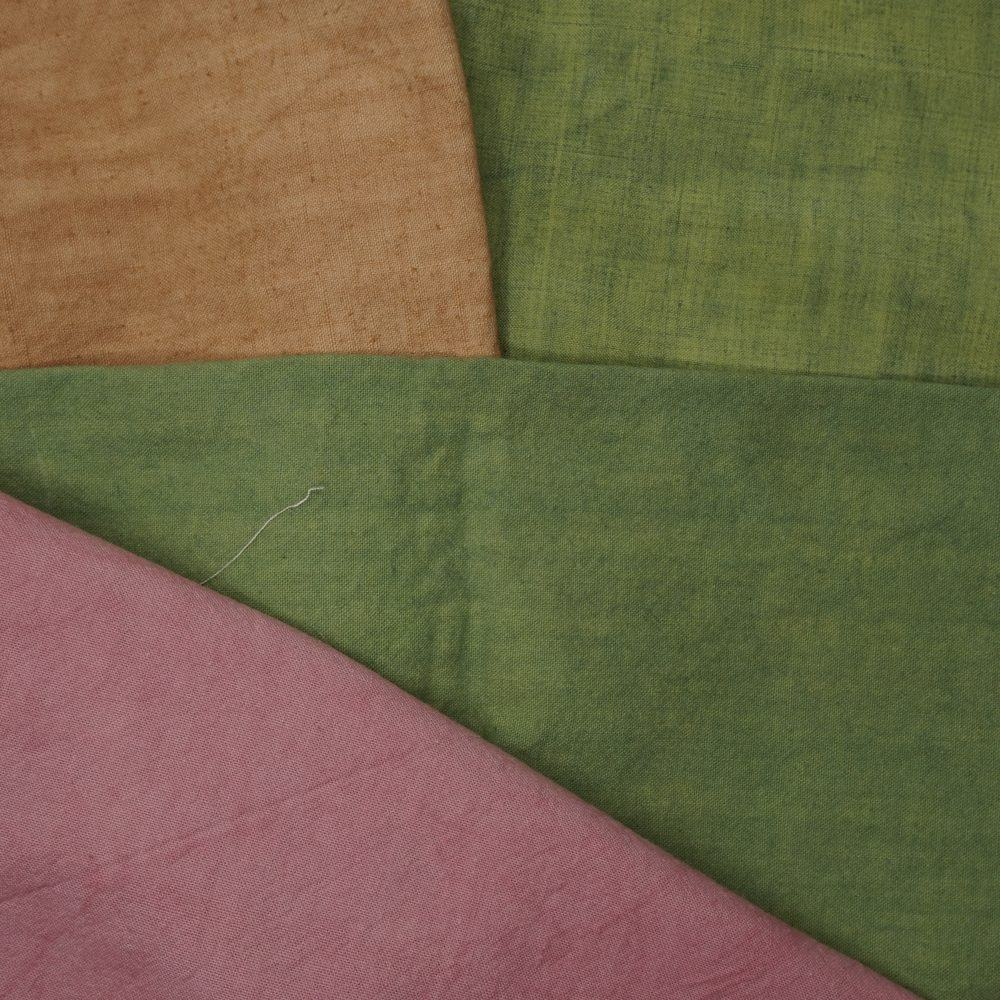
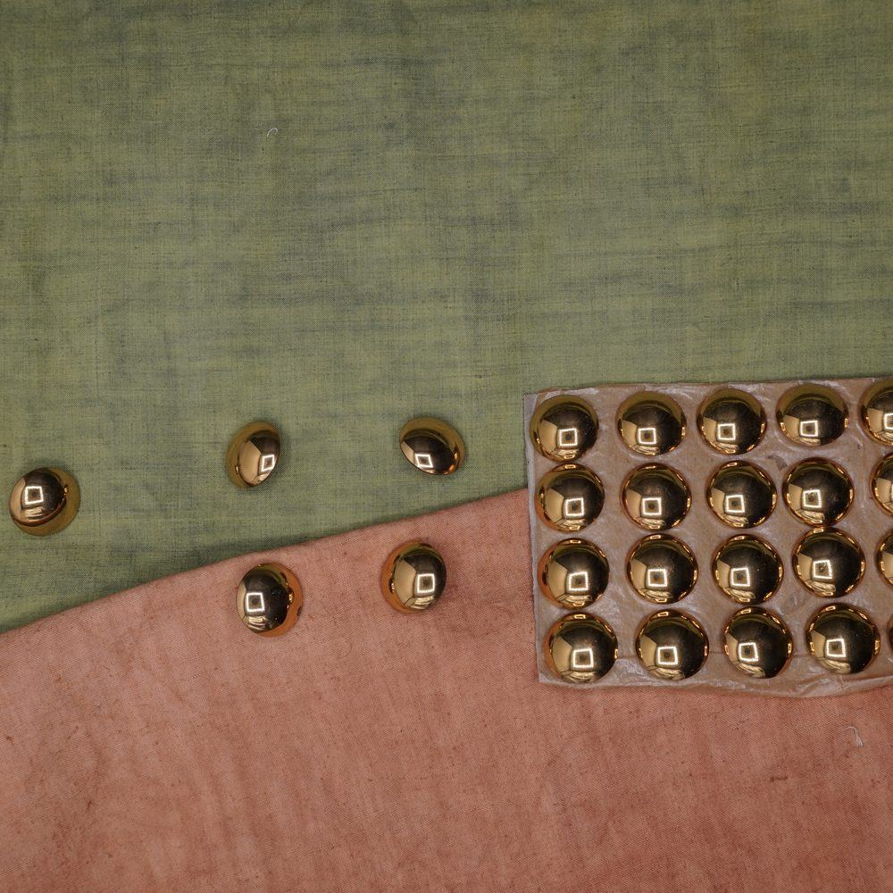

Guide de style : saharienne, robe saharienne et bermuda
Couleur
Soyez original : osez la couleur ! Les sahariennes sont traditionnellement marron ou kaki. Mais grâce à ses traits distinctifs (poches, épaulettes, pattes de manche…), votre saharienne restera une saharienne, même en couleur. Vous sortirez simplement du lot.

Tissu
Je taille mes sahariennes dans les vieux draps de nos grands-mères qui dorment encore dans les armoires. Ils étaient inusables, en pur coton, en métis (coton et lin) ou en pur lin. Ce sont de superbes tissus, qui se teignent très facilement et se prêtent particulièrement bien à ce modèle. Le métis et le lin régulent en plus la température : ils sont très agréables à porter. Leur tissage est souvent plus rustique, avec des fils moins fins qu'aujourd'hui, ce qui ne nuit en rien au style saharienne, bien au contraire.
Avant de couper, dépliez le drap à la lumière : écartez les zones usées ou amincies, souvent au milieu. Lavez-le ensuite à chaud : il ne rétrécira plus une fois le vêtement cousu.
Boutons
Pourquoi se contenter de boutons ordinaires ? Les origines militaires de la saharienne méritent de beaux boutons dorés, avec ou sans motif : ils lui donnent du caractère. N'hésitez pas à chiner : on trouve des boutons anciens d'une qualité supérieure à celle de la plupart des boutons vendus aujourd'hui. Ceux de la photo ci-dessous ont été achetés sur un site de revente entre particuliers. Ils viennent d'un fabricant de boutons militaires : voyez comme ils mettent les tissus en valeur.

Chinez un lot complet : selon le modèle et les options (poches à rabat, épaulettes, pattes de manche), une saharienne ou une robe saharienne demande entre 12 et 18 boutons.
Pour la robe saharienne
La robe se prête aux mêmes libertés de couleur. Une robe et une veste taillées dans le même drap teint forment un bel ensemble. Vous pouvez aussi choisir deux teintes de la même famille, comme deux verts.
Pour le bermuda
Choisissez un drap assez épais, en métis ou en lin lourd : un bermuda travaille plus qu'une veste, à l'enfourchure comme aux poches. Les boutons dorés vont sur la ceinture et sur les rabats des poches. Ceux de la braguette restent cachés : de simples boutons suffisent, gardez les beaux pour là où ils se voient.